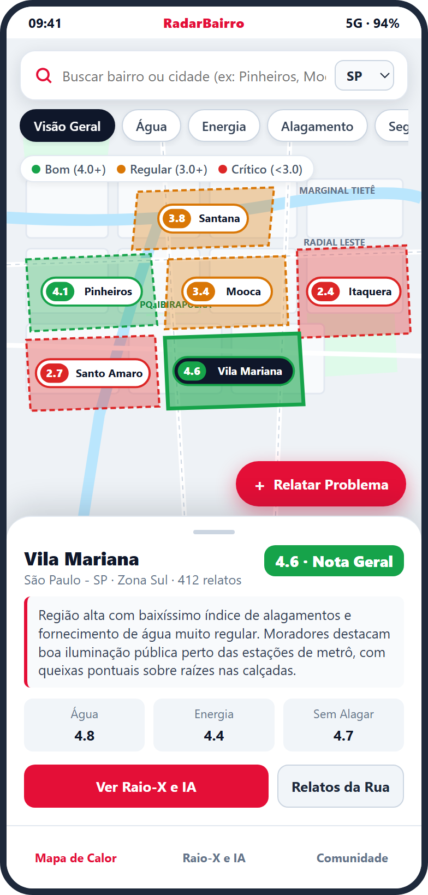
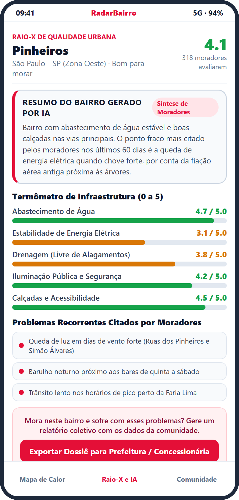
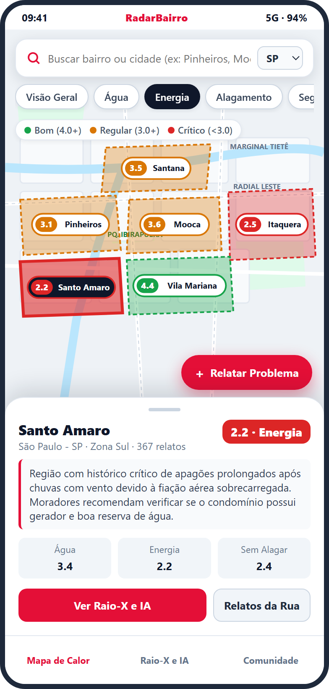
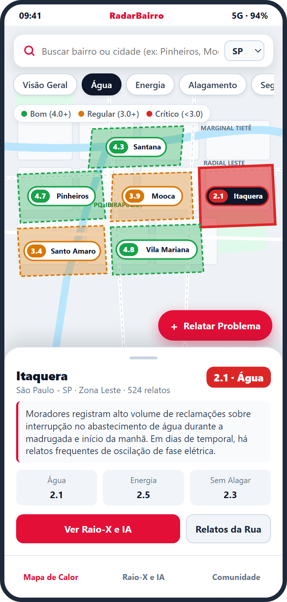
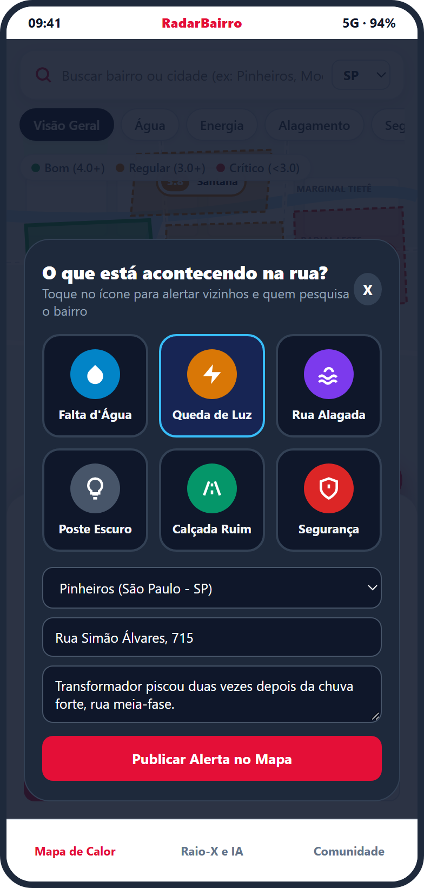
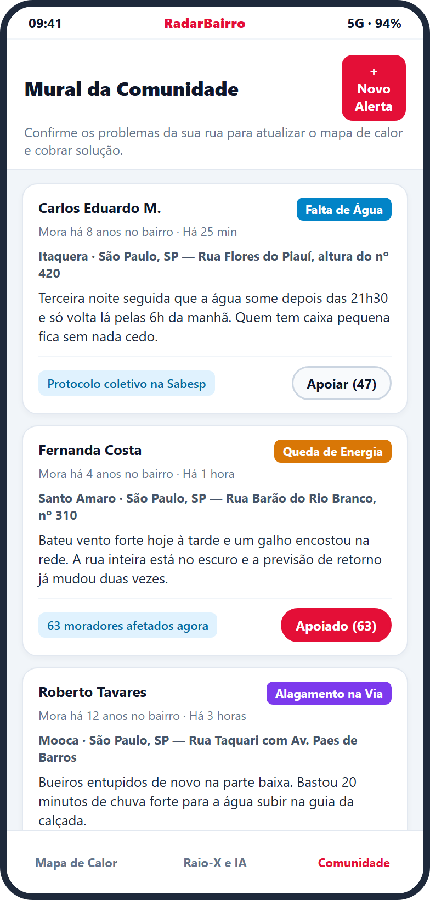

Mapa colaborativo de qualidade de vida e problemas reais de infraestrutura por bairro.
Renan Santa Rosa Xavier · RM 566997


Moradores e pessoas de mudança descobrem problemas da rua tarde demais.
Qualquer pessoa consulta a realidade de um bairro antes de se mudar e ganha força coletiva para cobrar melhorias na própria rua.
Público-alvo: moradores locais, famílias em mudança, inquilinos, estudantes e idosos
Unimos a facilidade de quatro grandes aplicativos sem função imobiliária.
Pílulas de filtro no topo e aba inferior no mapa, mas focado em infraestrutura.
Botão flutuante com ícones grandes para relatar problemas da rua em segundos.
Mural comunitário com botão Apoiar para validar problemas reais do bairro.
Barras de nota por categoria e caixa de destaque com resumo por IA.
Do relato do morador até a consulta no mapa de calor.
Alinhamento direto do aplicativo com as metas da Agenda 2030.
Mapeia pontos de alagamento, saneamento e calçadas para melhorar a vida urbana.
Dá visibilidade para bairros periféricos que sofrem com cortes recorrentes de água.
Registra falhas constantes na rede elétrica e orienta prioridades de manutenção.
Busca por estado ou bairro com troca imediata de camada.


Resumo por IA, relato em segundos e validação entre vizinhos.


Comunicação entre aplicativo mobile, API, banco de dados e serviços externos.
Benefícios diretos para quem procura moradia e para quem já mora.
Links com acesso público liberado para avaliação da entrega.